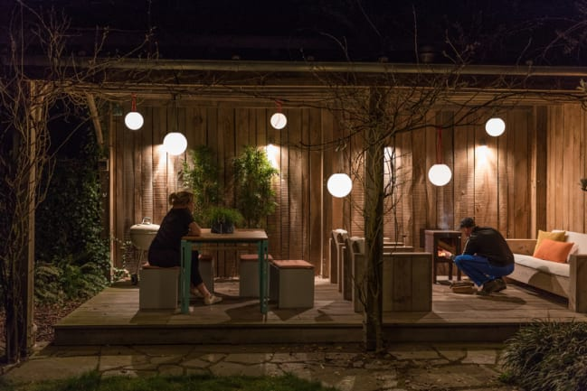

March 24, 2023
Bringing Hygge to Your Backyard: Easy Ways to Make Your Outdoor Space Cozy and Calm
Tips & Trendz

The hygge lifestyle can be for anyone and everyone — you just have to prioritize comfort. Your house should feel like a home, not cold and detached. When you extend your comfort to the outdoors, you build a space that offers several benefits and makes you feel right at home on your property.
What Is Hygge?
Hygge, a Danish word pronounced “hyoo-gah,” is a lifestyle that embraces coziness and the calm of life. You want to feel comfortable in your own home, and following a [hygge lifestyle] will let you relax — no more worrying about what other people may think about you or your home. You want your home to be welcoming and inviting, not necessarily look perfect on social media.
To live a hygge lifestyle, all you need to do is prioritize human connection over gadgets or any other distractions. Building a comfortable home is the best way to focus on the things you love while avoiding the things that don't make you happy. Focus on soft things that bring you comfort, and decorate every inch of your house with purpose — including your backyard.
Why Being Outdoors Is Great For You
Since you want to use every part of your home, you should ensure that your backyard is hospitable and makes you want to spend time outside. Being out in the sunlight can trigger physical growth and development, and it also plays a part in regulating your mental health. Spending time outside is directly linked to better physical and mental well-being. When you build a cozier outdoor space that becomes your hygge, you can enjoy every moment outside.
How to Level Up Your Backyard
You don't need the fanciest gadgets to have a backyard that invites people in. Just prioritize coziness and you'll draw people to your home. Your backyard is part of your home, so you should strive to make it as comforting as every other area of your home.
Hang Up Warm Lights
Adding lighting to your outdoor areas can make them feel cozier than before. Instead of relying on one main light to illuminate your space, you can make your whole space feel homier with several softer lights. Using more energy-efficient, quality lighting can even lower your energy use by almost 70%. In addition to saving money on your energy bills, you'll have a cozy backyard that welcomes family members and guests alike.
Soundproof Your Space
With a soundproofed backyard, you can spend time outside without worrying about too much noise leaking in or out. However, soundproofing your backyard is nothing like soundproofing a room. Instead of using artificial materials to act as a barrier, you can [lean into natural things], like shrubs and hedges, to help absorb some of the noise.
You'll add privacy to your backyard while ensuring you have plenty of clean air while outside. You can also opt for a fence to control some of the noise, making you a more responsible neighbor.